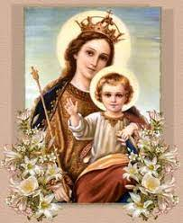
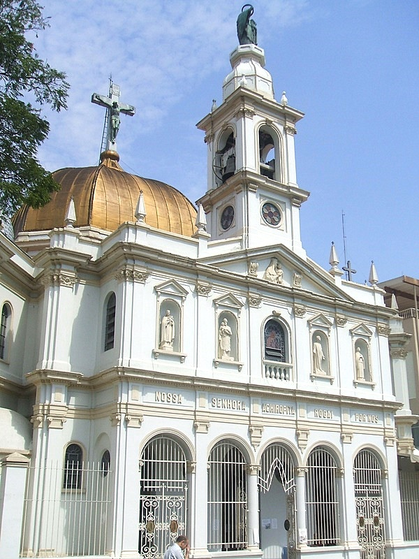
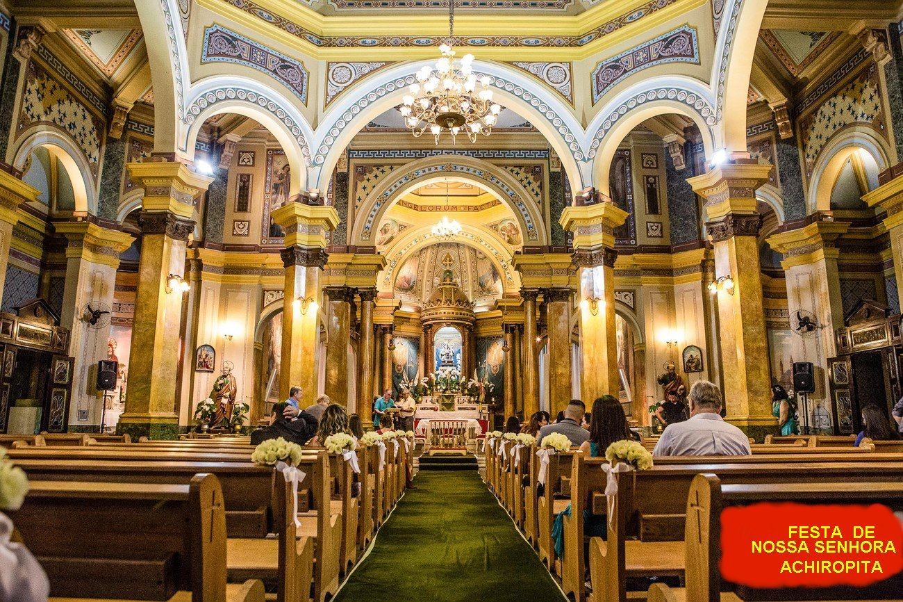

“NOSSA SENHORA ACHIROPITA E A IGREJA”

CHEGADA
Desde a Chegada da imagem da VIRGEM MARIA, Ela proporcionou uma bela devoção Mariana que logo se enraizou no coração dos brasileiros, que acolheram carinhosamente NOSSA SENHORA ACHIROPITA, como nossa verdadeira MÃE SANTÍSSIMA. Sua festa é celebrada no dia 15 de agosto, quando se comemora a ASSUNÇÃO DE NOSSA SENHORA AOS CÉUS. No Brasil, só existe uma Igreja dedicada a NOSSA SENHORA ACHIROPITA que se encontra em São Paulo no Bairro da Bela Vista. Sua festa é a maior comemoração religiosa da cidade de São Paulo e acontece desde 1908, se estendendo as comemorações atualmente, com celebrações e festejos durante as noites de dez dias, aos sábados e domingos.
Tudo começou com os italianos cristãos que emigraram para o Brasil e se localizaram na cidade de São Paulo, os quais, em grande parte vieram da Calábria, e por uma questão de preferência e comodidade se instalou no Bairro da Bela Vista (e passaram a denominá-lo de Bixiga).
INICIO DO FATO
Em 1908 uma imagem de NOSSA SENHORA DE
ACHIROPITA chegou à residência do senhor João Falcone, italiano residente a Rua
13 de Maio, número 100, no mesmo Bairro. As pessoas piedosas sabendo do
acontecimento passaram a visitar a residência do senhor Falcone, para rezar
diante da imagem. Ele também, sendo um cristão fervoroso, com a intenção de
proporcionar mais comodidade às pessoas interessadas, ergueu num terreno plano e
bem consolidado, um altar de madeira onde colocou a imagem nos dias escolhidos,
13, 14 e 15 de Agosto, para prestar uma carinhosa homenagem pública a SANTA,
facilitando assim, o desejo de muitos cristãos que queriam homenagear NOSSA
SENHORA. A receptividade foi muito boa e bem aplaudida, fazendo nascer à idéia
de construir uma Capela ou uma Igreja para NOSSA SENHORA ACHIROPITA. Assim, os
moradores do Bairro e muitos outros simpatizantes que moravam em outros Bairros,
se empenharam a trabalhar com esse objetivo, colhendo doações, e realizando
quermesses, a fim de conseguirem concretizar o ideal de todos. Para facilitar,

ATUALMENTE
A Igreja cresceu e ficou bem bonita. É justamente a Igreja atual da PARÓQUIA DE NOSSA SENHORA ACHIROPITA. Também a Festa da Padroeira que é durante o mês de Agosto, cresceu muito, de maneira admirável e bela, a cada ano, ganhando tanta popularidade, que se tornou uma das Festas mais Tradicionais e Populares da Capital Paulista. Anualmente atrai cada vez mais pessoas, moradores de outros Bairros da Cidade e principalmente, caravanas de pessoas residentes dentro do Estado de São Paulo, e também, vindas de outros Estados da Federação Brasileira. Desde o Ano 2009, a Festa de NOSSA SENHORA ACHIROPITA está incluída no Calendário Turístico do Estado de São Paulo.
BAIRRO - BELA VISTA / BIXIGA
Como já comentamos o Bairro Bela Vista é também denominado Bairro do Bixiga, por influência dos emigrantes italianos, que adotaram o nome “Bixiga”. E na verdade, é um dos Bairros mais simpáticos e dos mais tradicionais dos paulistanos da capital. O Bairro acolheu desde 1870, como mencionamos muitas famílias italianas que vieram para o Brasil e em consequência, povoaram toda aquela região, assumindo a característica cultural do povo paulistano, e verdadeiramente mantiveram viva a cultura, as tradições e a religiosidade do paulistano em geral. No Bairro, em diversos setores encontram-se intelectuais, artistas e pessoas que também apreciam a cultura e os costumes regionais, inclusive a culinária. Nele existem também construções históricas, como a bonita escadaria do Bixiga, unindo a parte alta do Bairro, situada na Rua dos Ingleses à parte baixa do Bairro, situada na Rua Treze de Maio, desse modo, permitindo um acesso perfeito ao pólo de cultura de um lado e às cantinas e feira do outro.
AS HOMENAGENS A NOSSA SENHORA
As homenagens a NOSSA SENHORA ACHIROPITA são anualmente no mês de Agosto, e em cada ano ganha novas cores, mais movimentação, beleza, alegria e, sobretudo, muita piedade, fazendo crescer um imenso Amor a NOSSA MÃE SANTÍSSIMA. Na Igreja é celebrada a Santa Missa em diversos horários pela manhã, à tarde e a noite. Também, acontece durante o tempo, reza do Terço na Igreja, Batismo de crianças, Novenas a NOSSA SENHORA e ao SAGRADO CORAÇÃO DE JESUS, inclusive uma bela Procissão, completando dignamente a parte religiosa. São construídas nos espaços próximos, dezenas de barraquinhas de doces e de salgados, que ensejam a oportunidade das pessoas saborearem gostosos quitutes, apreciarem admiráveis doces e belos passeios, inclusive encontrando amigos para “matar” as saudades. É na verdade um tempo alegre e divertido, que primordialmente proporciona ao espírito muita satisfação e o prazer intransferível de rezar na Igreja e conversar intimamente com Nossa Mãe Santíssima.

INTERIOR DA IGREJA PAROQUIAL DE NOSSA SENHORA ACHIROPITA EM SÃO PAULO CAPITAL